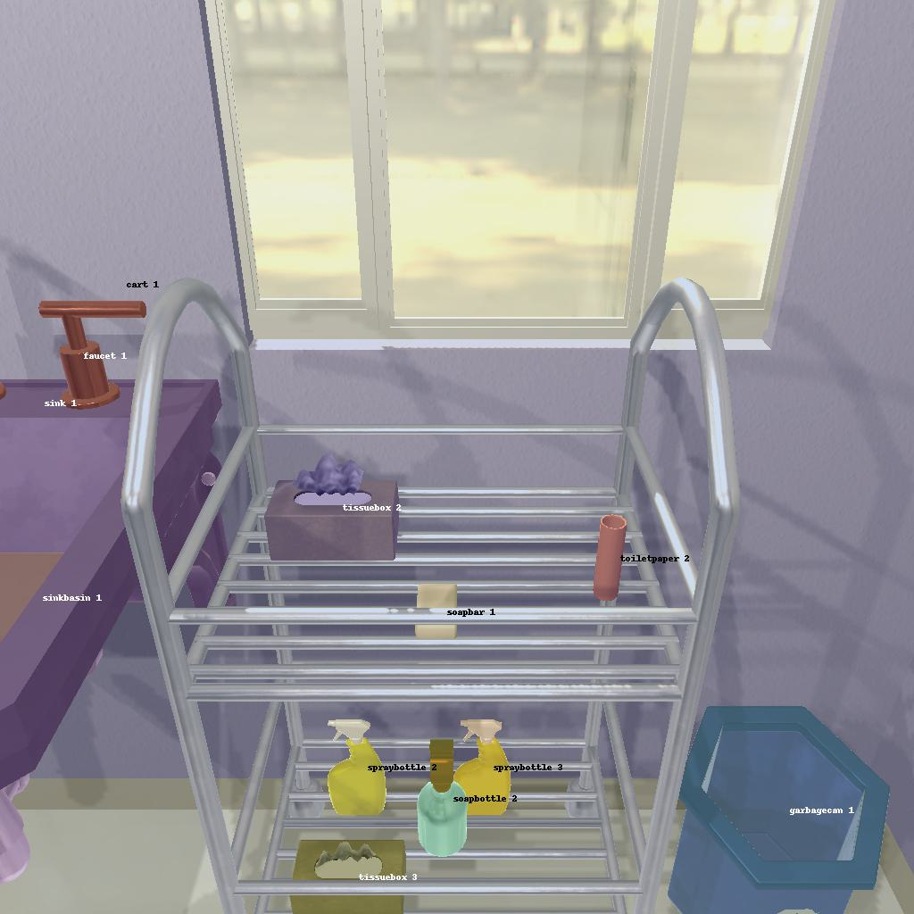

---------------------------------------------------------task: 28---------------------------------------------------------
--------------------------------------------------------------------------------------------------------------------------------------------------------------------
--------------------------------------------------------------------------------------------------------------------------------------------------------------------
Step:--------------------------------------------------------------------------14-------------------------------------------------------------------------------
----------------------------------------
VLM Prompt:
Image1:
Image2:
**Instruction**
1. Analyze the provided image to identify all visible household objects, focusing on those relevant to the task description "find two spraybottle and put them in toilet."
2. Use the analysis of the image and the task hint "The agent must find an object of the desired type, pick it up, find the correct location to place it, put it down there, then look for another object of the desired type, pick it up, return to previous location, and put it down there with the other object." to answer the question: what is the most reasonable action in the choices for the task description "find two spraybottle and put them in toilet"?
4. Decide and write the answer using the template: The answer is: (i): , where i is the real number. If there is no desired object in the image, search every place based on **Initial Observation** to find the object. And if no one is exactly correct, choose a similar answer.
**Initial Observation**
You are in the middle of a room. Looking quickly around you, you can see bathtub (1), bathtubbasin (1), cart (1), sink (1), garbagecan (1), sinkbasin (1), countertop (1), drawer (1-4), toilet (1), toiletpaperhanger (1)
**Answer Choices**
(1): go to bathtub 1
(2): go to bathtubbasin 1
(3): go to sink 1
(4): go to garbagecan 1
(5): go to sinkbasin 1
(6): go to drawer 2
(7): go to drawer 3
(8): go to drawer 4
(9): go to toilet 1
(10): go to toiletpaperhanger 1
(11): take tissuebox 2 from cart 1
(12): take tissuebox 3 from cart 1
(13): take faucet 1 from cart 1
(14): take soapbottle 2 from cart 1
(15): take spraybottle 2 from cart 1
(16): take spraybottle 3 from cart 1
(17): take toiletpaper 2 from cart 1
(18): take soapbar 1 from cart 1
(19): examine cart 1
**Answer**
Let's think step by step by following the instructions.
----------------------------------------
----------------------------------------
Original Response:
First, we need to identify all visible household objects relevant to the task description. In the provided images, we can see two spraybottles on cart 1 in Image2, labeled as spraybottle 2 and spraybottle 3.
Next, we need to follow the task hint, which involves finding the objects of the desired type, picking them up, and placing them in the correct location. In this case, the correct location is the toilet.
Based on the **Initial Observation**, we know the location of the toilet (toilet 1) and where to find the spraybottles (cart 1).
Given the **Answer Choices**, the most reasonable action for the task description "find two spraybottles and put them in toilet" would be to first take one of the spraybottles from cart 1.
Therefore, the answer is:
(15): take spraybottle 2 from cart 1
----------------------------------------
----------------------------------------
>>> Refine Original VLM Response and Get Pure Action: No action
----------------------------------------
-----------------------------------------------------------------
Running time: 9.737725496292114 seconds
Total Money: 14.181350000000004
-----------------------------------------------------------------
-----------------------------------------------------------------
Text Observation:Nothing happens.
-----------------------------------------------------------------
UNSUCCEED